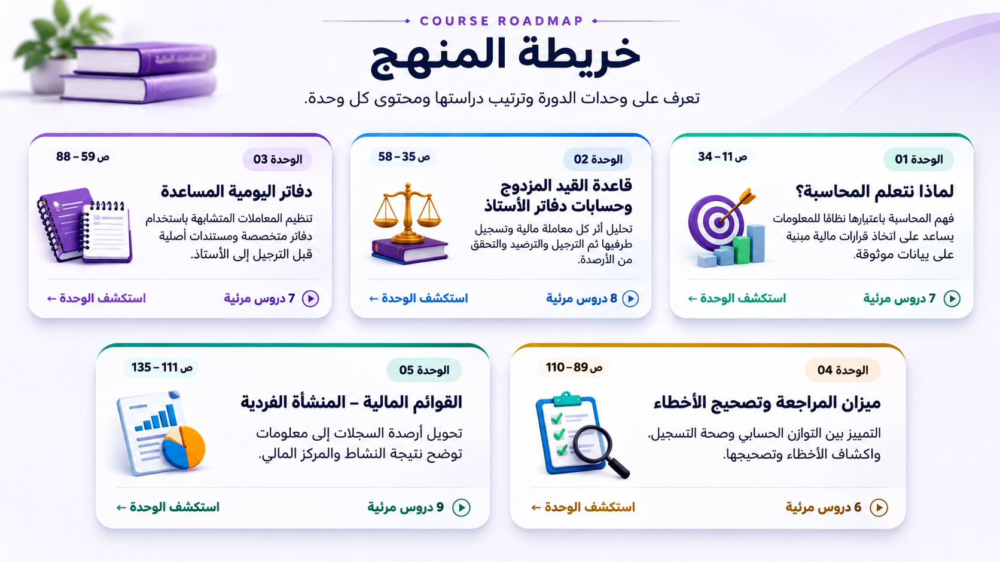

كيف تذاكر كل وحدة؟
- شاهد شرح الدرس بالترتيب.
- راجع المفاهيم والقواعد في ملخص الدرس.
- شاهد المثال المحلول ثم أوقف الفيديو وحاول الحل بنفسك.
- حل تدريبات الأداءات والتقييمات المرتبطة بالموضوع.
- أكمل اختبار الوحدة قبل الانتقال إلى الوحدة التالية.

الوحدة الأولى: لماذا نتعلم المحاسبة الوحدة الثانية: قاعدة القيد المزدوج وحسابات دفاتر الأستاذ الوحدة الثالثة: دفاتر اليومية المساعدة الوحدة الرابعة: ميزان المراجعة وتصحيح الأخطاء الوحدة الخامسة: القوائم المالية للمنشأة الفرديةاضغط على أي وحدة في الخريطة لفتح صفحتها ودروسها.
في أسئلة التفسير المدعوم بالأدلة، لا تكتفِ بذكر النتيجة. كوّن حكمًا واضحًا، وفسّر سبب اختيارك، ثم ادعم إجابتك بدليل من المفاهيم أو البيانات المحاسبية.